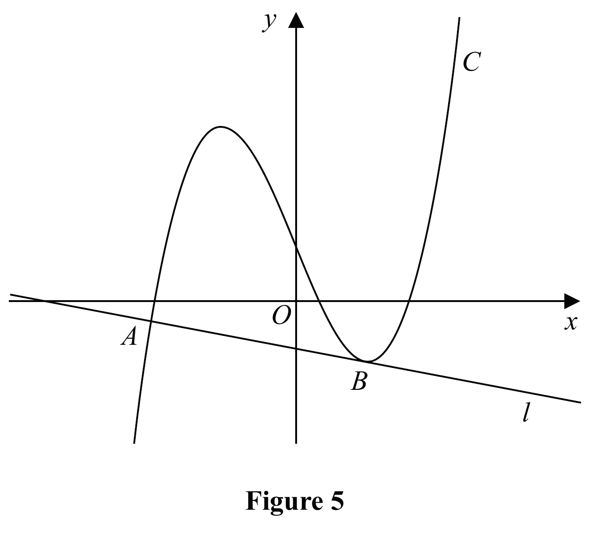

Figure 5 shows a sketch of the curve \(C\) with equation
\(y=\frac27x^3+\frac17x^2-\frac52x+k\)
where \(k\) is a constant.
(a) Find \(\frac{dy}{dx}\)
(2)
The line \(l\), shown in Figure 5, is the normal to \(C\) at the point \(A\) with \(x\) coordinate \(-\frac72\)
Given that \(l\) is also a tangent to \(C\) at the point \(B\),
(b) show that the \(x\) coordinate of the point \(B\) is a solution of the equation
\(12x^2+4x-33=0\)
(4)
(c) Hence find the \(x\) coordinate of \(B\), justifying your answer.
(2)
Given that the \(y\) intercept of \(l\) is \(-1\)
(d) find the value of \(k\).
(4)
[12 marks]

Official-reference boundary. This part was not reviewed in the lesson, so its scored state remains unknown rather than being assumed blank. The worked method below is supplied as a complete reference and is not evidence that the learner attempted it during the lesson.
Strategy and why this applies. Apply the differentiation power rule term by term; the constant parameter disappears.
Formula first. The power rule is \(\frac{d}{dx}(ax^n)=anx^{n-1}\). Apply it separately: \(\frac{d}{dx}(\tfrac27x^3)=\tfrac27\cdot3x^2=\tfrac67x^2\); \(\frac{d}{dx}(\tfrac17x^2)=\tfrac27x\); \(\frac{d}{dx}(-\tfrac52x)=-\tfrac52\); and \(\frac{d}{dx}(k)=0\) because \(k\) is constant.
\[\boxed{\frac{dy}{dx}=\frac67x^2+\frac27x-\frac52}.\]Sense check. Differentiation multiplies by the old power and reduces that power by one; it does not divide by a new power, which is the integration rule. Re-integrating the derivative gives \(\tfrac27x^3+\tfrac17x^2-\tfrac52x+\text{constant}\), matching the curve's non-constant terms.
Transfer trigger. In a normal/tangent question, calculate and verify the gradient function first because every later perpendicular and tangency condition depends on it. Keep fractions exact: rounding a gradient before taking a reciprocal can prevent the required quadratic from simplifying exactly.
Official-reference boundary. This part was not reviewed in the lesson, so its scored state remains unknown rather than being assumed blank. The worked method below is supplied as a complete reference and is not evidence that the learner attempted it during the lesson.
Strategy and why this applies. Find the tangent gradient at A, take the negative reciprocal for the normal, then equate that line gradient to the curve gradient at B.
Gradient at A. Substitute \(x=-\tfrac72\) into the derivative:
\[m_{t,A}=\frac67\left(-\frac72\right)^2+\frac27\left(-\frac72\right)-\frac52 =\frac{21}{2}-1-\frac52=7.\]Perpendicular definition. A normal is perpendicular to the tangent, so \(m_{n,A}=-1/m_{t,A}=-\tfrac17\). The same line \(\ell\) is tangent at B, hence the curve's derivative at \(x_B=x\) must equal \(-\tfrac17\):
\[\frac67x^2+\frac27x-\frac52=-\frac17.\]Multiply by 14 to clear every denominator:
\[12x^2+4x-35=-2,\] \[\boxed{12x^2+4x-33=0}.\]Sense check and transfer trigger. The normal-gradient step requires both a minus sign and a reciprocal. The quadratic arises from equating a gradient function to a known line gradient, not from intersecting the curve and line. Whenever one line is normal at one point and tangent at another, compute its fixed gradient at the first point, then set \(dy/dx\) equal to that gradient at the second.
Official-reference boundary. This part was not reviewed in the lesson, so its scored state remains unknown rather than being assumed blank. The worked method below is supplied as a complete reference and is not evidence that the learner attempted it during the lesson.
Strategy and why this applies. Solve both algebraic candidates, then use the graph’s sign condition to select B.
Solve the quadratic. It factorises as
\[12x^2+4x-33=(2x-3)(6x+11)=0.\]Therefore the candidates are \(x=\tfrac32\) and \(x=-\tfrac{11}{6}\). Both satisfy the gradient equation, so algebra alone cannot identify which tangency point is labelled B.
Hard transition—use the source condition. Figure 5 shows B on the positive-\(x\) side of the y-axis. Hence reject the negative candidate \(-11/6\) and retain
\[\boxed{x_B=\frac32}.\]Sense check. \(12(\tfrac32)^2+4(\tfrac32)-33=27+6-33=0\). The rejected value also solves the quadratic, which confirms that rejection must be justified geometrically rather than by claiming it is not a root.
Transfer trigger. If a quadratic generated from a graph yields multiple valid algebraic points, use the labelled position, interval, branch or domain stated in the question. State that reason beside the chosen root; simply choosing the “nicer” value does not earn the justification mark.
Why both roots appear. The equation in part (b) locates every point where the curve's tangent gradient equals the fixed gradient of \(\ell\); it is not yet restricted to the labelled point B. The second root therefore has a geometric meaning rather than being an algebra mistake. The sketch supplies the additional identification condition: B is the positive-x tangency point. Keeping this distinction prevents an unsafe habit of discarding a mathematically valid candidate without citing the source condition that distinguishes the requested branch.
Official-reference boundary. This part was not reviewed in the lesson, so its scored state remains unknown rather than being assumed blank. The worked method below is supplied as a complete reference and is not evidence that the learner attempted it during the lesson.
Strategy and why this applies. Write the full line equation, find a point on it, then substitute that point into the curve to determine k.
Line equation. Gradient \(-\tfrac17\) and y-intercept \(-1\) give
\[\ell:\ y=-\frac17x-1.\]At A, \(x=-\tfrac72\), so
\[y_A=-\frac17\left(-\frac72\right)-1=\frac12-1=-\frac12.\]Thus \(A=(-\tfrac72,-\tfrac12)\). Because A lies on C, substitute both coordinates into the original curve:
\[-\frac12=\frac27\left(-\frac72\right)^3+\frac17\left(-\frac72\right)^2-\frac52\left(-\frac72\right)+k.\]Evaluate the three non-constant terms:
\[\frac27\left(-\frac{343}{8}\right)=-\frac{49}{4},\quad \frac17\left(\frac{49}{4}\right)=\frac74,\quad -\frac52\left(-\frac72\right)=\frac{35}{4}.\]Their sum is \((-49+7+35)/4=-7/4\). Therefore \(-1/2=-7/4+k\), so
\[\boxed{k=\frac54}.\]Sense check and transfer trigger. With \(k=5/4\), the curve gives \(y_A=-1/2\), exactly the line value. In parameter questions, first convert gradient/intercept data into an actual point, then substitute that point into the original family; never jump directly from a gradient equation to the vertical-shift parameter.
On another paper, a line that is normal at one point and tangent at another should trigger a fixed-gradient bridge between the two points.